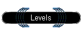
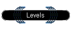

|
In The Ride of the Desperados, all new players go through a training course consisting of 10 levels.
When a player defeats a Desperado at the level he is currently at, he/she may progress to the next one.
Note: These levels are just suggested examples of what the Desperados might play you and may not accurately reflect the theme of deck used.
- Level 1
The Desperados are all over The Core and are looking forward to win.
- Level 2
The assets get bigger in this level. However, this level is very similar to Level 1.
- Level 3
The Desperados have finally tire of their straightforward tactics and are now resorting to sabotage. Evasion abilities are abound on this level.
- Level 4
Open season has been declared on your assets, as the desperados get rid of them one by one. Some may get stolen, some may get incapacitated, and some may just die. Nobody is safe anymore.
- Level 5
Your assets are tired, and the Desperados have ways to make them tap. Beware of ways to make the defence you built up so long go to waste.
- Level 6
Tired of attacking, the desperados are experimenting with new ways to kill your HQ. Beware of ways of stopping you own assets from attacking, or even from being deployed. Expect the unexpected.
- Level 7
Feeling the need for flexibility, the Desperados will hit you from several directions at once. Remember - no one can watch your back except you.
- Level 8
The Desperados have discovered ways of destroying multiple assets at one go. Then assets pop up and destroy your HQ while your defence is still in the Body Bank.
- Level 9
More expensive cards are taken into consideration when the Desperados build up their supply. Even if your defence is immune to one type of mass removal, there is always one more...
- Level 10
The ultimate level, anything can happen on this level. We're not tellling...
Legal Stuff
|